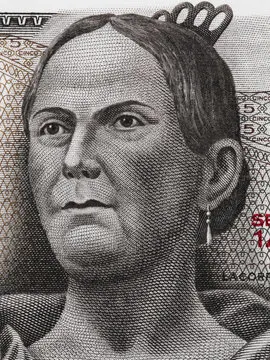

Mujeres importantes en la historia de México
Sor Juana Inés de la Cruz
Fue una de las escritoras más importantes del siglo XVII. Defendió el derecho de las mujeres a la educación y al conocimiento.

Frida Kahlo
Pintora mexicana reconocida internacionalmente por su arte y por representar la identidad y cultura mexicana.

Josefa Ortiz de Domínguez
Figura clave en el inicio de la Independencia de México. Su participación fue fundamental para el movimiento insurgente.